Gran Evento
En la Republica Dominica,
PARKOUR y Free Running... SIGAN Nuestras pagina para
mas información, los mejores del país en un solo escenario
compitiendo por el primer lugar, en el nuevo juego
( COLLECT THE TIME ) Las reglas y la temática estan disponible en la parte de eventos...!
Noticias
El evento que será presentado por PARKOUR ALIEN en REPÚBLICA DOMINICANA. Éste evento será presentado en la provincia Duarte o San Francisco de Macorís, se está esperando respuesta de el ayuntamiento de "SFM" para proceder con los preparativos del evento. Aún no tenemos respuesta de la solicitud para tener disponible el lugar donde será realizado este evento, que tendrá por nombre NEW GENERATION, éste evento esta planificado para finales de este año 2021. Esperamos que este evento de PARKOUR Y FREE RUNNUNG sea uno de los mas grande a nivel nacional en la Republica Dominica, también esperamos que este evento prenda la chispa que falta para que todos los practicante de ésta disciplina tengan una motivación para aprender y volver a practicar. Éste evento tendrá lugar a tres actividades que se realizarán en un período de 8 horas. Se está planificando comenzar con el evento principal que tiene por nombre “COLETC THE TIME”, ésta actividad es para todos los practicantes des parkour y Free Running, la temática de la competencia junto a las reglas están en la parte de eventos. La información de cómo entrar, de cuántos participantes habrá en la pista simultáneamente, y como se elegiran las pareja, aún no están disponibles por falta de respuestas por parte del (ayuntamiento municipal de SFM).
La segunda actividad que será una "competición" de la mejor combinación de acrobacias, ésta competición está ambientada para las personas que no hacen o practican Parkour y Free Running.
Los premios de cada evento se estarán dando a conocer un mes antes de la competencia, esperamos tener los recursos para dar un premio que sea aceptable para sus esfuerzos y dedicación al parkour, free running y triking dominicano.
¡muchas gracias!
Canal Principar YouTube
Otros Canales de YouTube de RD
Julio R.D
Run SFM PK
Atletas mas reconocidos en RD
Algunos Atletas de los mas reconocido en Republica Dominica, no solo por el Parkour o Free Running, tan bien por sus acrobacia, destreza física y su valor a la hora de hacer cosas nuevas y peligrosas. Aquí podremos encontrar una breve biografía de sus experiencia, y como entraron a este mundo de adrenalina y nuevos desafíos
Bismark
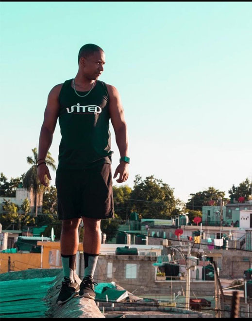Hola soy Bismark Montero vivo en santo Domingo este, comencé a entrenar Parkour a los 20 años,(algo tarde, aunque la filosofía de Parkour dice que cualquiera puede practicarlo por eso me sentí más tranquilo) conocí el Parkour por una película llamada B13 o Distrito 13 con el majestuoso protagonista y creador del Parkour David Belle, cuando vi la película quede facinado por lo ágil y rápido que se movía y escapaba era casi un súper héroes y buscando el detrás de cámara para ver cómo hicieron esos efectos me encontré con la gran sorpresa de que todo era real, busque a mis amigos para enseñarle la película y buscando el tráiler en Youtube me encontré con 1000les de vídeo de Parkour y nos pasamos la noche entera viendo vídeo de Parkour. Al terminar la noche decidimos que al otro día íbamos a entrenar eso. Formando este maravilloso grupo llamado Urban machines
Brando
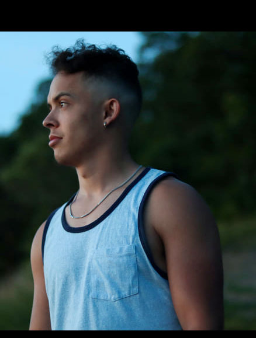hola soy Brando Duarte yo empecé a practicar a finales del 2012. Empezó como bailarín y quise entrarle mas dificultad a mi baile y comencé a aprender acrobacias en la gimnasia en el proceso conocí a un amigo (Enrique) y me introdujo al Parkour y desde ese entonces todo cambio , bien cursi El parkour me gusta por todo lo que te enseña y te prepara mental y físicamente. La enseñanza que nos dicen, que nuestra verdadera competencia somos nosotros mismos y los obstaculos que nos proponemos a sobrepasar
Eliezer
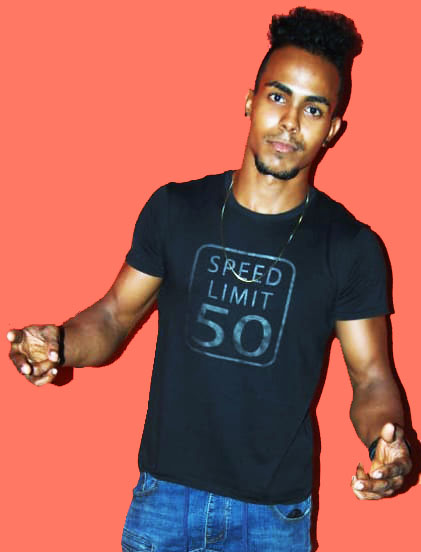Hola soy Eliezer vivo santo domingo, comencé con las acrobacia y las disciplina a los 18, el Parkour fue una de mis primeras disciplina luego me pase al Free Running, por que el cuerpo me pedía mas, luego de un tiempo pase al tumbling por que el cuerpo me pedía mas y mas asta llegar al punto donde estoy. Me gustan estas disciplinas por que me siento libre al ejecutar los movimientos me siento mas yo, al igual que el parkour,Free running, tricking y tumbling esta son las cosas que me hacen, sentir mas libre, mas yo.
Johan
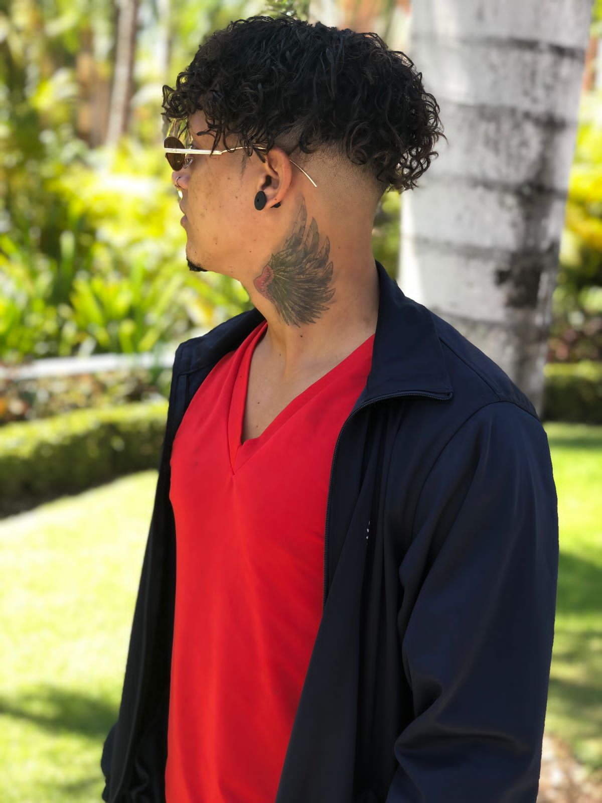Hola Soy Joan de moca, Comence con las acrobacias a la edad de 16 años por un amigo acróbata que me había dicho para entrenarme , luego de hay a los dos años de práctica ya había alcanzado un buen nivel , a nivel callejero y en ese mismo año inicie con la gimnasia artística , dure dos años y medio en la gimnasia , logré competir en los juegos nacional en Santo Domingo asta que veía que eso no era para mi , decidi dejar la gimnasia. Y practicar más callejero . Asta el punto de llegar a participar en recopilaciónes de videos de los mejores acróbatas de todos los países a nivel internacional . Fue mucho trabajo pero logré alcanzar mi objetivo asta reconocerme fuera de mi país natal.
Nelson
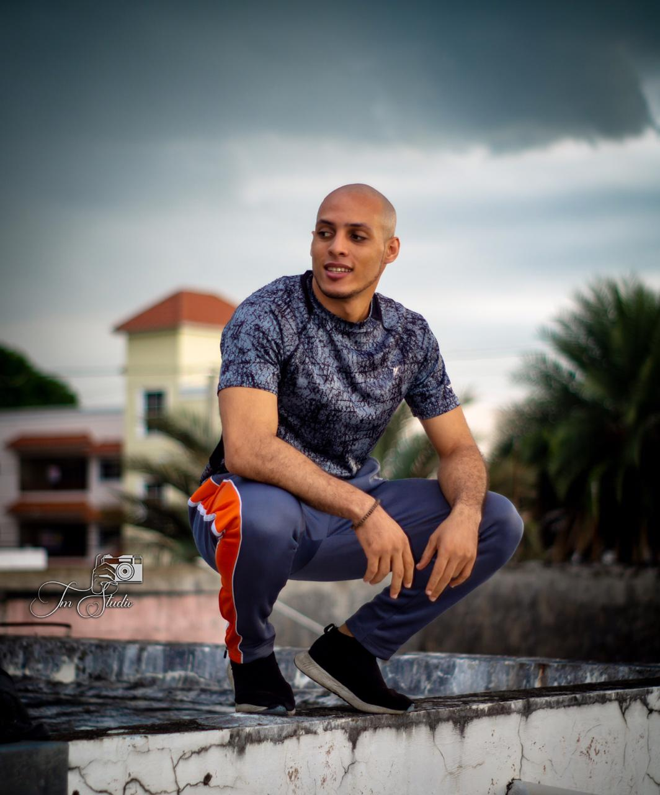Hola soy Nelson Román vivo en bonao, comencé a entrenar Parkour a los 17 años, conocí el Parkour por videos de traceurs en Youtube, mi inicio no fue fácil ya que era criticado por lo que hacía y y tampoco tenía ninguna tutela o alguien que me enceñara sobre la disciplina. No fue asta 2013 que me enteré de que habían más traceurs en mi país y tuve el honor de ir a mi primer RT(reunión de traceurs) y desde entonces no e dejado de crecer física y mentalmente gracias a la filosofía de esta gran disciplina.
Atletas destacados en RD 2015 asta 2021
Rodorfo
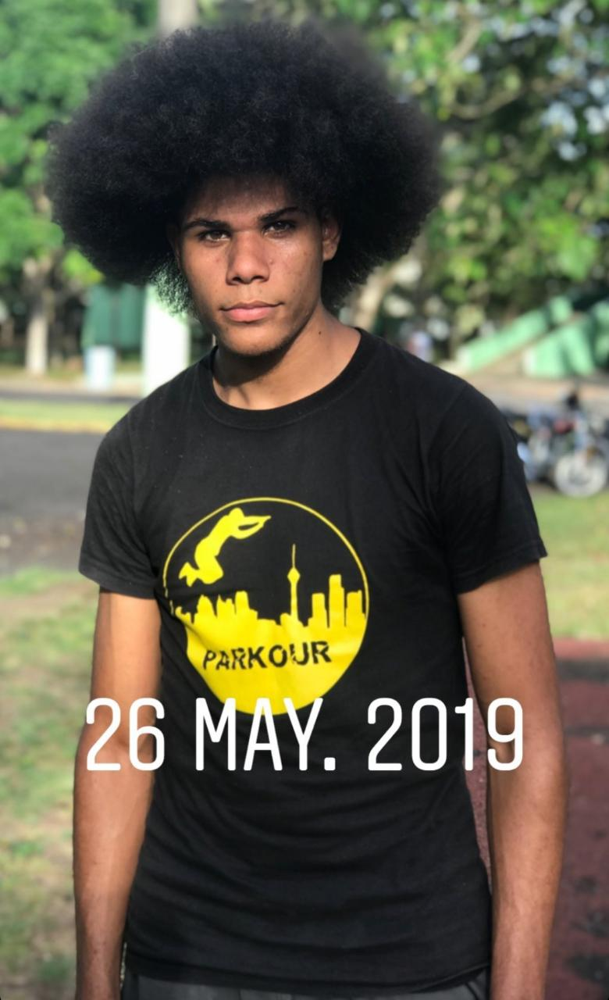Hola Soy Rodolfo Gil Vivo En Santiago Fui Criado En San Francisco De Macorís, Comencé A Practicar Parkour Cuando Tenia 15 Años De Edad, Fui Inspirado Por Barias Persona Que Siempre Boy a Admirar Por Siempre, Porque Fueron Mis Maestros “Michael Ortega” Comencé A Conocer Más Del Parkour Cuando Fui Avanzando En El Estadio Julián Javier Luego mas adelante Forme Mi Equipo De Traceus Llamando Run Sfm Pk
Julio
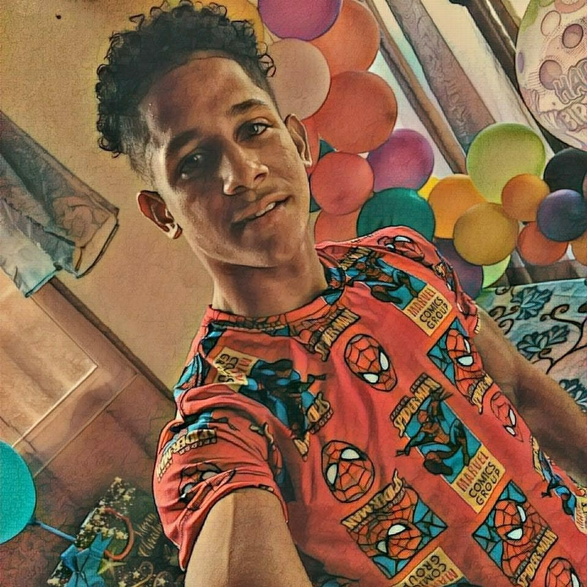Hola soy julio Antonio, vivo en Valverde de esperanza, tengo 18 años de edad, el tiempo que tengo practicando está disciplina de el parkour es de 3 años. Iniciando dando mis primeros pasos dentro de el parkour viendo vídeos tutorial en YouTube, desde hay comencé una nueva rutina en mi vida, mientras que con el tiempo todo fue cambiando más, prácticas saltos, desplazamiento, mortales, poco a poco me fui enamorando, sintiendo algo diferente, fue como una nueva aventura he ilusión que no tiene final, en toda mi vida fui creciendo tanto en la practica de parkour como en menta, físicamente, y una gran concentración, cada día nuevas motivación para mí, cada día que hacía parkour, trucos, desplazamiento era como otro mundo lleno de cosas positivas, dónde cada tranceús está conectado con la amistad he ideas positivas que nos llevan más a ya del éxito...
Nelsaury
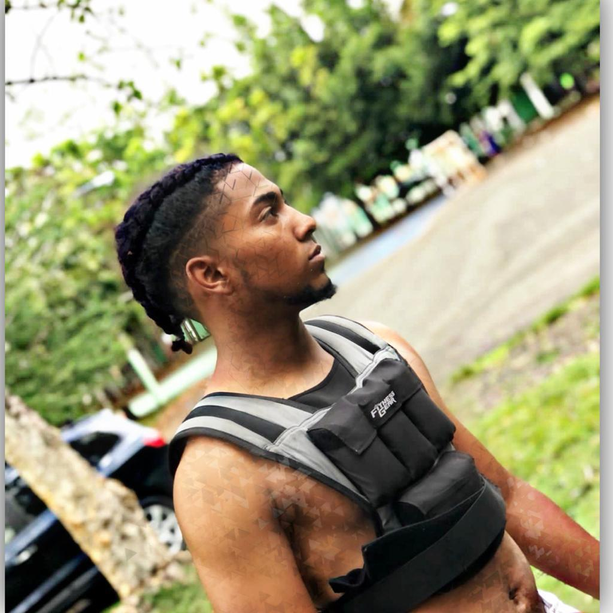Nelsaury de la cruz, un día vi unos amigos haciendo mortales acrobacia en el Liceo, desde ese día me interesa mucho así que comenzó a practicar con ayuda de un amigo, asta que me destaque como es más influyentes de mi generación no digo ser el mejor pero nunca me eh frisado en cualquier junte, por qué para mí sigo siendo el mismo novato del primer día.
Alvin
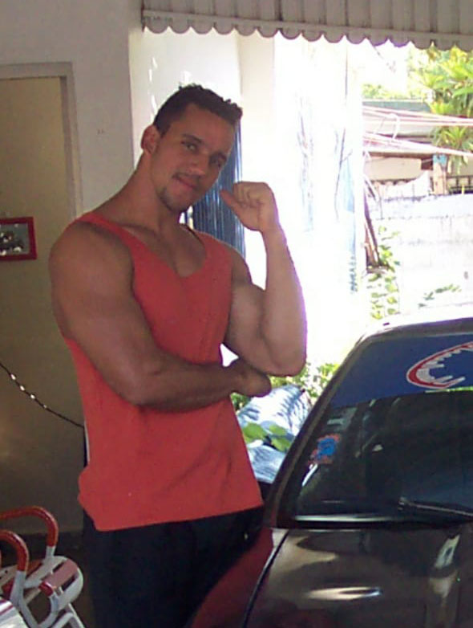Hola soy Alvin de jesus Garcia comencé desde muy joven, con las acrobacia y los mortales en los años 1996 hasta el 2004 con la edad de 17, luego en el 2019 con 42 años de edad encontré un pequeño grupo de practicante de parkour en el estadio de SFM, con los cuales me integre donde comencé hacer parkour y acrobacias nuevamente
Firpo
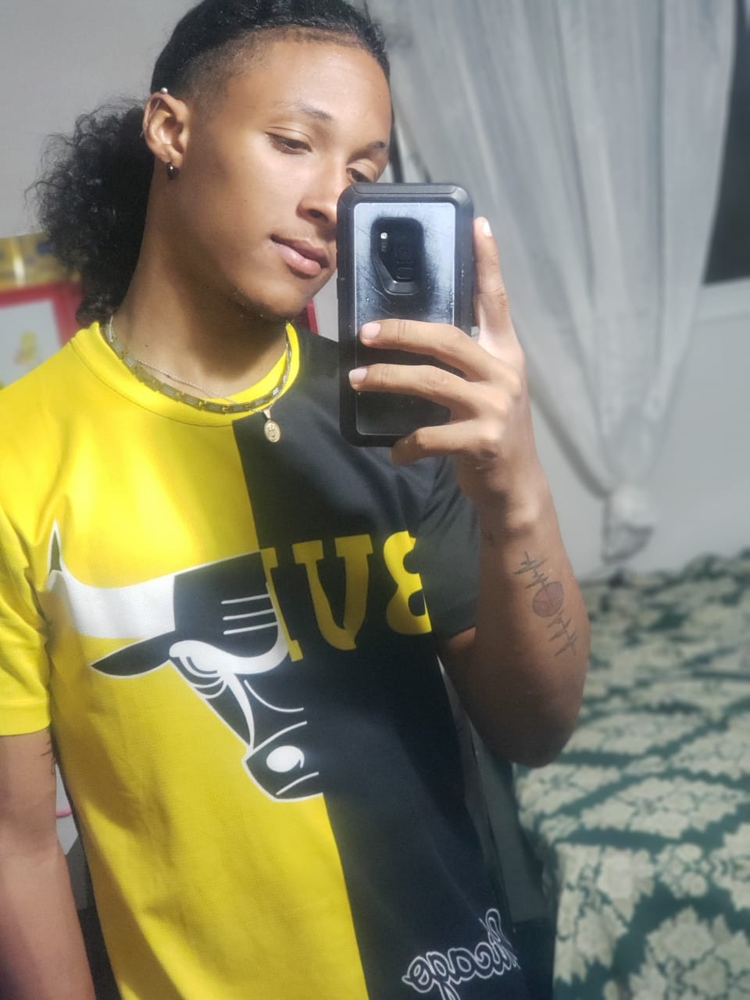Hola soy Luis Manuel Firpo Ortiz Edad: 19 años Soy de: San Francisco De Macorís Mi inspiración fue al ver los demás haciendo parkour me motive hacerlo también y gracias a Dios aprendí y aquí estoy para representar mi provincia en cualquier lugar del mundo.
Maycrow_05
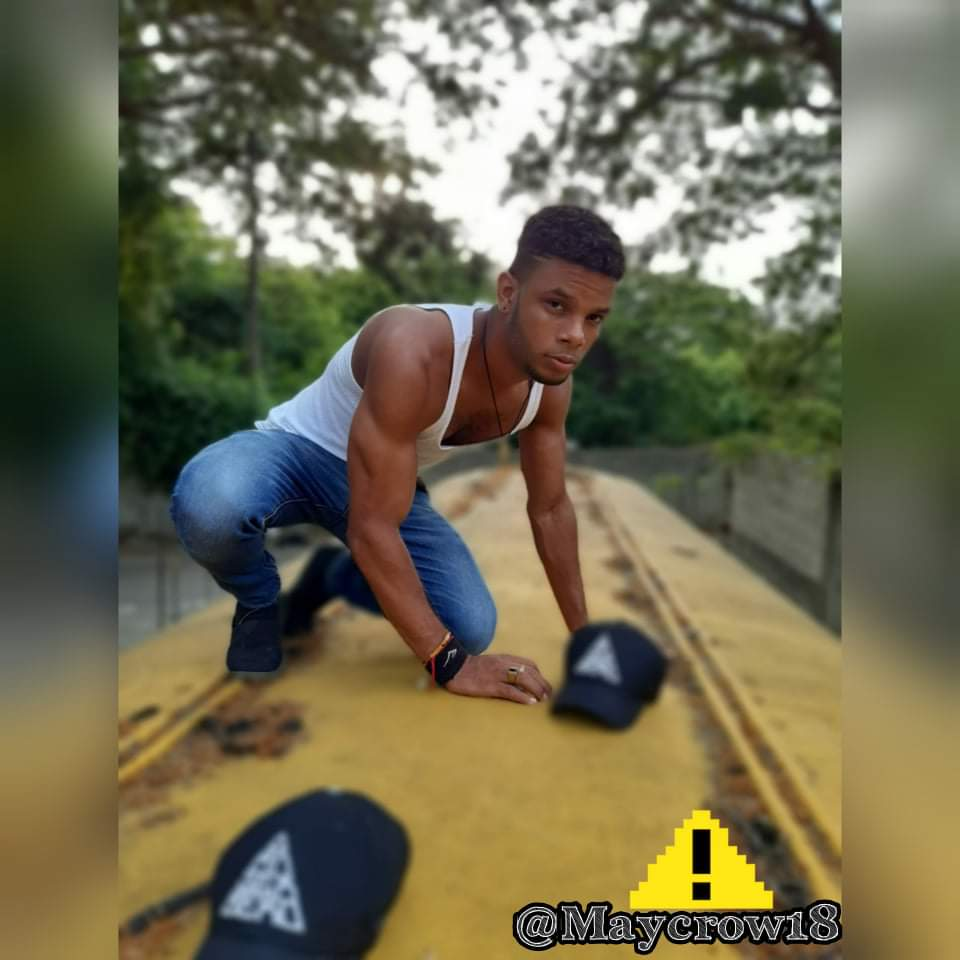Hola soy Oscar de los santos Bueno mi pasión por el parkour llegó a mi vida en el 2016 yo veía vídeos en YouTube de parkour pero nunca pensé que aquí en RD🇩🇴 avía persona que practican parkour Y pues un dia fui aún parque Y ví a unas personas a siéndolo Y desde ese día comencé a practicar con ellos Y desde ese día el parkour es mi vidad Y me falta mucho por aprender pero boy por más.
COLECT THE TIME
COLECT THE TIME: es un juego hecho para los traceur que se basa en recolectar ESTRELLAS en un campo de obstáculos, este juego mide las habilidades, tanto físicas como mentales de cada traceu
Como estarán las estrellas en el campo de obstáculos
Las estrellas no tienen un orden en específico, con el propósito de que cada traceur busque su propio camino en el campo de obstáculos, ya sea fácil, difícil, rápido o despacio.
Los participante tiene que tener en cuenta que estoy no es una carrera de el que haga menor tiempo, tendrá muchos factores mas para poder hacer el mejor tiempo.
Cada estrella recolectada en el campo de obstáculo tendrá el valor de 2s negativos, los mortales dados en el campo tendrán el valor de 3s negativos, ¿que quiere decir esto.¿ no se tratara de coger la ruta mas corta sino de llevar un balance de una ruta que te permita recolectar estrellas como que puedas dar el número de saltos y mortales en un equilibrio de tiempo.
NOTA: ojo con esto!
En la primera ronda todas las estrellas estarán colocadas a lazar, tomando en cuenta que a mayor distancian mayor cantidad de estrellas, para la segunda ronda se organizará de manera diferente a si hasta llegar a la final del COLECT THE TIME.
Ejemplo:
Si haces un tiempo de 50s, mas 5 estrellas, mas dos mortales,
Esto nos deja con un tiempo de 34s recorrido en el campo de obstáculos, que será el tiempo final para evaluar cada recorrido en la pista.
Reglas
01- Cada traceur tiene que recolectar al menos 5 estrellas.
1.1- Cada estrellas es igual a -2 segundos de tiempo.
02- Cada traceur tiene que hacer al menos una acrobacia.
2.2- Cada acrobacia será tomada en cuenta y será validada por -3 segundos de tiempo.
3.0- Solo se permiten dos treceus en el campo de obstáculos.
3.1. Los traceur no pueden tocarse sujetarse o acercarse a menos de 50 cm.
04- Los traceur tienen que utilizar ropa y calzado deportivo, previamente aprobado por los jueces del evento.
05- No se permite mantener objetos u otro objeto en las manos, para evitar así posibles inconvenientes al evento.
06- Cada traceur tiene que esperar a que el marcador comience su conteo para iniciar con el recorrido.
07- Ninguna otra persona puede ayudar o intervenir dentro del campo de obstáculos,
a menos que haya una mala caída o lesión. (En este caso, solo personas autorizadas como paramédicos presentes).
08- Cada traceur tiene que tener un nivel de experiencia para poder participar en el
evento, si usted es aprendiz no puede entrar a competir.
09- Cada traceur tiene que tener un papel firmado que valide que está consciente de
que en esta competencia puede sufrir cualquier daño y no somos responsables de lo que ocurra dentro del evento.
11- Cada traceur tiene que ser mayor de edad o tener un papel firmado por los padres o un tutor.
Equipo que se utilizara
Todos los participante llevaran un equipo que se utilizara en la competencia, para cargar las estrellas este esquipo esta echo y diseñado para que a cada participante, no sea una molestia o una carga que sea fácil, ligero, cómodo y no intervenga con los movimientos, ni tenga ningún riesgo para los participante
¡ Descripción de el equipo
Este equipo será tipo correa se sostendrá de la cintura bajara asta casi la rodilla donde tendrá otro agarre circular el la parte que baja, de extremo a extremo tendrá una placa metálica muy sensible de una mínima densidad para a si evitar inconvenientes.
¡ Descripción de como será las estrellas
Las estrellas contendrán un pequeño imán de neodineo, para que tengan un fácil contacto con el metal de el equipo que llevaran los participante, esto provocara un contacto magnético entre el imán y la placa metálica que permitirá que las estrellas estén pegadas en el equipo de cada traceus al tomar las estrellas tendrán una forma menos complicada de llevar las estrellas asta el final de el recorrido, por la pista de parkour.
Dejen sus dudas en la caja de comentarios estaremos respondiendo lo mas pronto posible !muchas gracias…!